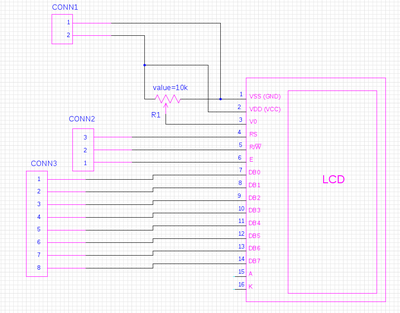
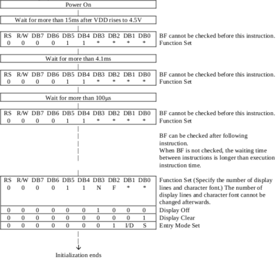

La plupart des afficheurs LCD sont fichus de la même manière et ont le même brochage. Donc pour commencer, un fois votre afficheur trouvé (je vous conseil un afficheur deux lignes), réalisez la connectique suivante; n’oubliez pas le potentiomètre qui fait un pont entre VCC et VSS et le curseur sur V0: ça servira à régler le contraste:

- Le connecteur1 servira à l’alimentation (faites des piquages de tension sur votre mini-lab).
- Le connecteur2 se branchera sur le port C (c0, c1, c2).
- Le connecteur3 se branchera sur le port D (d0 →d7)
Je vous conseille vivement de mettre votre afficheur dans un boîtier pour éviter les câbles qui se dessoudent, les court-circuits, …
Pour ma part, j’ai acheté mon afficheur chez Electronique-Diffusion (http://www.electronique-diffusion.fr/), et j’ai pris le moins cher (celui à 6 euros). Jetez un oeil sur la datasheet lcd – nrb16244
Description
L’étape la plus tendue (car on avance à l’aveugle) est d’initialiser l’afficheur. On vous dit qu’il faut :

Je vous rassure, c’est pratiquement vrai… mais faux. J’initialise l’afficheur de la manière suivante :
/* Preparing outputs */
LCD_DATA_CNF = 0; /* configure PIC as output */
LCD_RS_CNF = 0; /* configure PIC as output */
LCD_RW_CNF = 0; /* configure PIC as output */
LCD_E_CNF = 0; /* configure PIC as output */
LCD_E=0; /* chip disabled */
/* Device initialization */
delay1ktcy(CRISTAL_FREQ*4); /* Wait for 16ms after poweron (here 16ms) */
LCD_DATA = 0x3C;
LCD_RS = 0;
LCD_RW = 0;
/* Step 1*/
LCD_E=1;
delay1ktcy(CRISTAL_FREQ); /* Wait for 4.1ms */
delay10tcy(3*CRISTAL_FREQ);
LCD_E=0;
delay100tcy(CRISTAL_FREQ*8);
LCD_E=1;
delay10tcy(3+CRISTAL_FREQ); /* Wait for 100µs */
LCD_E=0;
delay100tcy(CRISTAL_FREQ*8);
LCD_E=1;
delay10tcy(2*CRISTAL_FREQ); /* Wait for 42µs */
LCD_E=0;
delay100tcy(CRISTAL_FREQ*8);
LCD_E=0;
LCDPAUSE;
/* Display off */
//lcd_send_cmd(0x08);
/* Display clear */
lcd_clear();
/* Entry mode set */
lcd_emode(INC_CURSOR);
// Select Function Set
lcd_fmode(IFACE_8BIT | DUAL_LINE);
/* Display on, cursor on */
lcd_dmode(DISPLAY_ON | CURSOR_ON | BLINK_ON);
#ifdef ENABLE_LCD_PRINTF
stdout = STREAM_USER;
#endif
Ce qui n’est pas précisé dans la doc, c’est qu’il faut faire un premier blackout de 16ms avant d’activer l’afficheur. Vous remarquerez que les délais sont calculés à partir de la fréquence de fonctionnement du microcontrolleur. n’oubliez pas de régler cette valeur dans le fichier lcd.h
J’ai rajouté la possibilité d’utiliser la fonction standard printf. Pour que ce soit pris en compte, assurez-vous que la ligne suivante est présente dans lcd.c :
#define ENABLE_LCD_PRINTF
Les fonctions que vous utiliserez sont :
- lcd_init : initialisation de l’afficheur
- lcd_print : écrit une chaine de caractère
- lcd_setLine : précise sur quelle ligne écrire
- printf: à condition d’avoir compilé avec l’option ENABLELCDPRINTF
Le code source
Comme dans l’article sur la mémoire flash, je me suis créé une librairie de fonctions simples pour faire des affichages.
lcd.h
#ifndef __LCD_H__
#define __LCD_H__
#define CRISTAL_FREQ 48
#define LCD_DATA_CNF TRISD
#define LCD_DATA LATD
#define LCD_RS_CNF TRISCbits.TRISC2
#define LCD_RS LATCbits.LATC2
#define LCD_RW_CNF TRISCbits.TRISC1
#define LCD_RW LATCbits.LATC1
#define LCD_E_CNF TRISCbits.TRISC0
#define LCD_E LATCbits.LATC0
//Entry mode variables
#define INC_CURSOR 0x02
#define DEC_CURSOR 0x00
#define SHIFT_ON 0x01
//Display control variables
#define DISPLAY_ON 0x04
#define DISPLAY_OFF 0x00
#define CURSOR_ON 0x02
#define BLINK_ON 0x01
//Cursor move variables
#define SHIFT_DISP 0x08
#define SHIFT_RIGHT 0x04
#define SHIFT_LEFT 0x00
//Function set variables
#define IFACE_4BIT 0x00
#define IFACE_8BIT 0x10
#define DUAL_LINE 0x08
#define DOTS_5X11 0x04
//DDRAM locations
#define FIRST_LINE 0x00
#define SECOND_LINE 0x40
void lcd_init();
void lcd_print(char* st);
void lcd_pushLetter(unsigned char l);
void lcd_setLine(unsigned char nb);
unsigned char lcd_busy();
void lcd_clear();
void lcd_home();
void lcd_send_cmd(unsigned char cmd);
void lcd_send_data(unsigned char dataval);
void lcd_ddram(unsigned char address);
void lcd_dmode(unsigned char options);
void lcd_cmode(unsigned char options);
void lcd_emode(unsigned char options);
void lcd_fmode(unsigned char options);
#endif
lcd.c
#include <pic18fregs.h>
#include <delay.h>
#include "lcd.h"
#define LCDPAUSE delay100tcy(CRISTAL_FREQ*8);
void lcd_init() {
/* Preparing outputs */
LCD_DATA_CNF = 0;
LCD_RS_CNF = 0;
LCD_RW_CNF = 0;
LCD_E_CNF = 0;
LCD_E=0;
/* Device initialization */
delay1ktcy(CRISTAL_FREQ*4); /* Wait for 16ms after poweron (here 16ms) */
LCD_DATA = 0x3C;
LCD_RS = 0;
LCD_RW = 0;
/* Step 1*/
LCD_E=1;
delay1ktcy(CRISTAL_FREQ); /* Wait for 4.1ms */
delay10tcy(3*CRISTAL_FREQ);
LCD_E=0;
LCDPAUSE;
LCD_E=1;
delay10tcy(3+CRISTAL_FREQ); /* Wait for 100µs */
LCD_E=0;
LCDPAUSE;
LCD_E=1;
delay10tcy(2*CRISTAL_FREQ); /* Wait for 42µs */
LCD_E=0;
LCDPAUSE;
/* Display clear */
lcd_clear();
/* Entry mode set */
lcd_emode(INC_CURSOR);
// Select Function Set
lcd_fmode(IFACE_8BIT | DUAL_LINE);
/* Display on, cursor on */
lcd_dmode(DISPLAY_ON | CURSOR_ON | BLINK_ON);
#ifdef ENABLE_LCD_PRINTF
stdout = STREAM_USER;
#endif
}
#ifdef ENABLE_LCD_PRINTF
PUTCHAR(C)
{
lcd_send_data((unsigned char)C);
}
#endif
void lcd_print(char* st) {
unsigned char i;
for(i=0;(st[i]!=0) && (i<16);i++)
lcd_send_data((unsigned char)st[i]);
}
void lcd_pushLetter(unsigned char l) {
lcd_send_data(l);
}
void lcd_setLine(unsigned char nb) {
unsigned char i;
lcd_ddram(SECOND_LINE*nb);
for(i=0;i<16;i++) lcd_send_data(' ');
lcd_ddram(SECOND_LINE*nb);
}
void lcd_clear()
{
lcd_send_cmd(0x01);
}
void lcd_home()
{
lcd_send_cmd(0x02);
}
void lcd_ddram(unsigned char address)
{
lcd_send_cmd((address & 0x7F) | 0x80);
}
/**
* set_emode(options) - Set entry mode
*
* Options:
*
* INC_CURSOR - Incremnt cursor after character written
* DEC_CURSOR - Decrement cursor after character written
* SHIFT_ON - Switch Cursor shifting on
*/
void lcd_emode(unsigned char options)
{
lcd_send_cmd((options & 0x03) | 0x04);
}
/**
* set_dmode(options) - Configure display mode
*
* Options:
*
* DISPLAY_ON - Turn Display on
* DISPLAY_OFF - Turn Display off
* CURSOR_ON - Turn Cursor on
* BLINK_ON - Blink Cursor
*/
void lcd_dmode(unsigned char options)
{
lcd_send_cmd((options & 0x07) | 0x08);
}
/**
* set_cmode(options) - Configure cursor mode
*
* Options:
*
* SHIFT_DISP - Shift Display
* SHIFT_RIGHT - Move cursor right
* SHIFT_LEFT - Move cursor left
*/
void lcd_cmode(unsigned char options)
{
lcd_send_cmd((options & 0x03) | 0x04);
}
/**
* set_fmode(options) - Configure function set
*
* Options:
*
* 4BIT_IFACE - 4-bit interface
* 8BIT_IFACE - 8-bit interface
* 1_16_DUTY - 1/16 duty
* 5X10_DOTS - 5x10 dot characters
*/
void lcd_fmode(unsigned char options)
{
lcd_send_cmd((options & 0x1F) | 0x20);
}
void lcd_send_cmd(unsigned char cmd)
{
while (lcd_busy());
LCD_RS = 0;
LCD_RW = 0;
LCD_DATA_CNF = 0;
LCD_DATA=cmd;
LCD_E=1;
LCDPAUSE;
LCD_E=0;
LCD_DATA=0;
}
void lcd_send_data(unsigned char dataval)
{
while (lcd_busy());
LCD_RW = 0;
LCD_RS = 1;
LCD_DATA = dataval;
LCD_E = 1;
LCDPAUSE;
LCD_E = 0;
LCD_DATA=0;
}
unsigned char lcd_busy()
{
unsigned char loop=0;
unsigned char dataval;
LCD_DATA_CNF = 0xFF;
LCD_RW = 1;
LCD_RS = 0;
LCD_E = 1;
LCDPAUSE;
dataval = LCD_DATA;
LCD_E = 0;
LCD_DATA_CNF = 0x00;
if (dataval & 0x80)
return 1;
return 0;
}
config.h
#include <pic18fregs.h>
// Set the __CONFIG words:
__code __at (__CONFIG1L) _conf0 = _PLLDIV_DIVIDE_BY_5__20MHZ_INPUT__1L & _CPUDIV__OSC1_OSC2_SRC___1__96MHZ_PLL_SRC___2__1L & _USBPLL_CLOCK_SRC_FROM_96MHZ_PLL_2_1L;
__code __at (__CONFIG1H) _conf1 = _OSC_HS__HS_PLL__USB_HS_1H;
__code __at (__CONFIG2L) _conf2 = _VREGEN_ON_2L;
__code __at (__CONFIG2H) _conf3 = _WDT_DISABLED_CONTROLLED_2H;
__code __at (__CONFIG3H) _conf4 = _PBADEN_PORTB_4_0__CONFIGURED_AS_DIGITAL_I_O_ON_RESET_3H;
__code __at (__CONFIG4L) _conf5 = _ENHCPU_OFF_4L & _LVP_OFF_4L ;
__code __at (__CONFIG5L) _conf6 = _CP_0_OFF_5L ;
main.c
#include <pic18f4550.h>
#include "config.h"
#include "lcd.h"
#include <stdio.h>
/*
Designed for a 20MHz cristal
*/
void main() {
lcd_init();
//lcd_print("Hello world");
printf("Hello world");
while (1);
}
Téléchargement
Le projet est disponible ici: lcd.tar.gz